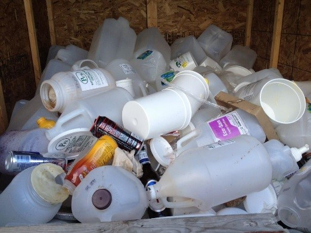
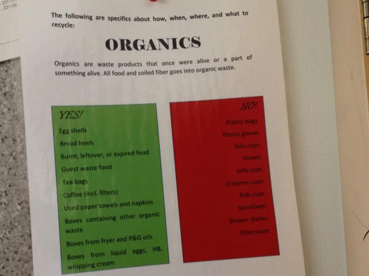
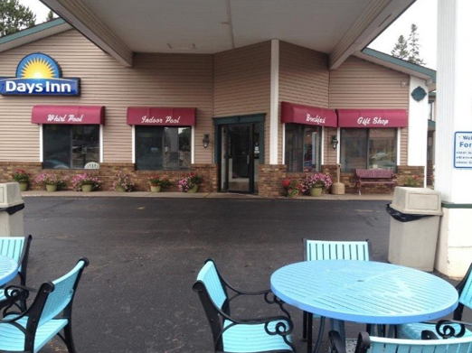
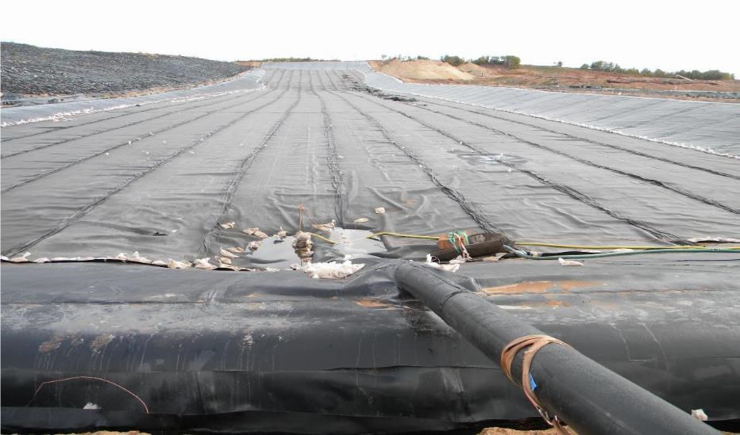
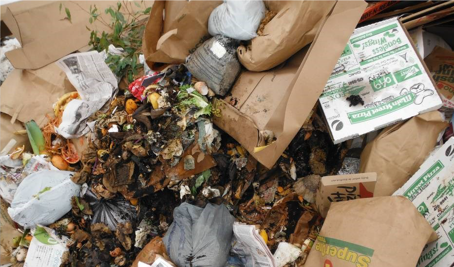

EWS LLC is helping businesses to create cost-effective plans to sustainably manage their wastes. These plans focus on proper recycling and using aerobic digestion of organics to minimize methane emissions.
EWS LLC has implemented plans at two dining venues, Perkins Restaurant & Bakery and Hudson’s Classic Grill, and two hotel chain locations, Days Inn and Comfort Suites, in Marquette, Michigan. During the appraisal process, EWS assessed the curbside waste generated at the four locations and found that 60% of curbside waste was organic, 30% was recyclable, and only 10% was neither recyclable nor organic. As part of their initiative, EWS identified several steps to maximize the amount of waste that could be cost-effectively diverted from landfills, including:
The activities reduced operating costs by 40% and eliminated methane emissions that would have occurred if all of the curbside waste had been disposed of in a landfill.
EWS LLC expects that their work with local businesses will:
|  |  |  |
EWS’s aerobic digestion systems offer facilities a cost-effective waste management solution compared to landfills. Their systems reduce methane and other emissions and have been refined to work across environmental regulations and in a variety of site conditions. EWS’s systems offer:
|  |  | |
| Large Scale Biodigester | Feedstock | Final Product |